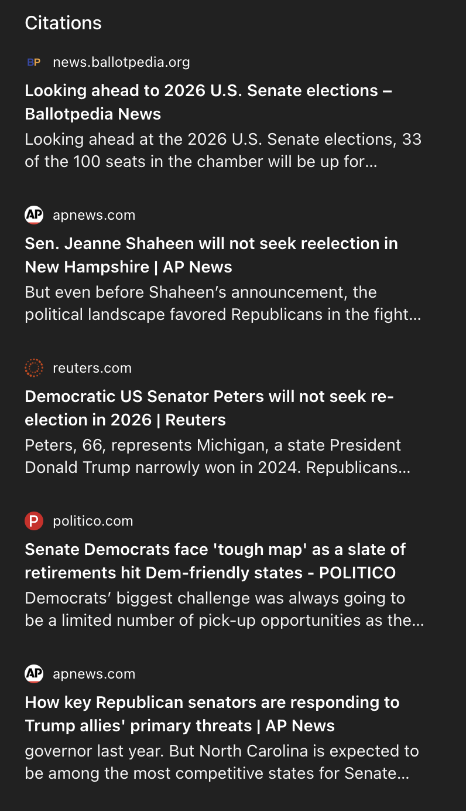

Deep Research and the Midterm Elections
Although the 2026 Midterm Elections are still a ways away - political pundits are already talking about them. With the advent of Deep Research - I was interested in seeing what ChatGPT could come up with when given the chance. The idea behind “Deep Research” is that it explores the web to find a number of sources while reprompting to come up with a thesis or an idea. For this test we will try to create a short report (500 words) only using fact based news sources that are relatively polically neutal (NYT, WSJ, AP, etc):
Prompting
“Please give a summary of what to expect in the 2026 Midterm elections. Please only use fact based neutral sources (NYT, WSJ, AP, etc). Please compile your findings into a report of about 500 words”
Inital Response
“To create an accurate and focused 500-word report on the 2026 Midterm elections, could you please clarify a few points:
Are you interested in a general national overview, or should I focus on specific states or races (e.g., Senate, House, Governors)?
Should the report include historical context or focus strictly on current projections and developments?
Is there a preferred publication date range for sources (e.g., only information from 2025 onwards)?
Let me know so I can tailor the research accordingly.”
Clarification
“Please focus on the Senate races - we are only focused on current projections and developments with information from any date range.”
Main Response (note this took about 10 min to generate)
Got it. I’ll prepare a report of about 500 words summarizing the key developments and projections for the 2026 U.S. Senate races, using neutral and fact-based sources like the New York Times, Wall Street Journal, and Associated Press. I’ll focus on current forecasts, vulnerable seats, major candidates, and any notable trends shaping the races.
I’ll get back to you shortly with the report.
2026 U.S. Senate Midterm Outlook
The 2026 Senate map will feature 33 Class-2 seats in regular elections (plus special elections in Florida and Ohio). Of those, Democrats currently hold 13 seats and Republicans 20. As of early 2025 Republicans control a 53–47 majority (including two independents who caucus with Democrats). Democrats must net four seats to flip the Senate.
Key Battleground Races
Several states are viewed as competitive. The Republican-held seats most often cited as vulnerable are Maine (Sen. Susan Collins, R) and North Carolina (Sen. Thom Tillis, R). Collins must defend a seat in a state President Biden won by 15 points, making Maine one of Democrats’ best pickup opportunities. North Carolina (Trump +3 in 2024) is also seen as a toss-up: AP reports it “is expected to be among the most competitive states” in 2026, especially if Democrat Roy Cooper runs for the open seat. Republicans will heavily contest Georgia, where Democratic Sen. Jon Ossoff faces an energetic GOP field (e.g. Insurance Commissioner John King recently entered the Republican primary).
Open seats created by retirements will also be closely watched. Three Democrats – Sen. Jeanne Shaheen (NH), Sen. Gary Peters (MI), and Sen. Tina Smith (MN) – have announced they will not seek 2026 reelection. These retirements leave open Democratic seats in two swing states (New Hampshire, Michigan) and one typically blue state (Minnesota). Republicans are expected to target all three. By contrast, there are few obvious pickup targets among the Republican map. Outside Maine and North Carolina, analysts note that Texas (Cornyn) and Iowa (Grassley) have been Republican-held by safe margins, making flips unlikely.
Retirements and Notable Candidates
Senate retirements have reshaped the 2026 contest. On the Democratic side, the departures of Shaheen (NH), Peters (MI), and Smith (MN) force the party to defend three seats it otherwise would have expected to hold. Veteran Democrats Sen. Dick Durbin (IL, age 80) has signaled uncertainty about running again, and Sen. Michael Bennet (CO) is exploring other offices. On the GOP side, Senate Minority Leader Mitch McConnell (KY) announced in February 2025 that he will not seek a sixth term. McConnell’s retirement opens a safely Republican seat in Kentucky and ushers in a generational leadership change for Senate Republicans.
Candidates are beginning to line up in key races. In Georgia, for example, AP reports that Republican John King has already launched a campaign against Sen. Ossoff. In North Carolina, Governor Cooper has not ruled out a bid. In general, early analysis suggests most incumbents are likely to run, but open contests (GA, KY, NH, MI, MN) will draw crowded primaries and heavy spending.
Political Trends
Several political factors could influence the 2026 outcomes. Historically, the party of the sitting president tends to lose Senate seats in midterm elections – on average about 3–4 seats since 2002. If Republicans control the White House in 2026 (as is widely assumed), that historical pattern and polling data on the economy could favor Democrats. For instance, AP notes that “Republicans, as the party controlling the White House, would face a challenging environment” due to rising voter pessimism and trade tensions. Other factors – such as turnout rates in an off-year election and state-by-state demographics – will also matter. Notably, redistricting has no direct effect on Senate races, but state political trends (e.g. suburban shifts or changes in battleground states) will shape individual contests.
Partisan Balance and Stakes
Currently, Republicans hold 53 Senate seats to the Democrats’ 47. Because two independents caucus with Democrats, Republicans’ working majority is effectively 53–47. Democrats need a net gain of four seats to reach 51 and take control. In practice, that means flipping nearly all the competitive races (Maine, North Carolina, possibly Georgia) while holding their own open seats. As one analyst notes, “winning [Maine] and [North Carolina] wouldn’t win back control on their own”. The 2026 Senate results will determine which party holds the majority for the 120th Congress and will shape the legislative agenda.
Sources: Recent reporting from the Associated Press, Reuters, Politico and Ballotpedia (aggregated data).
Sources:
Here we can see a quick snapshot of some of the sources used as well as the activity used to search. 
Conclusion:
Overall deep research works well however some of the ways it sources will pickup potenitally bad information on the internet that could carry bias. I think it will be important to exercise caution when using this tool - as just because it is able to spin up an output does not always mean that it is “deep research”.